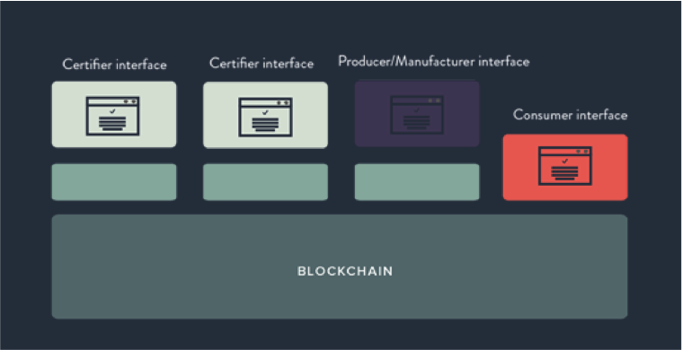
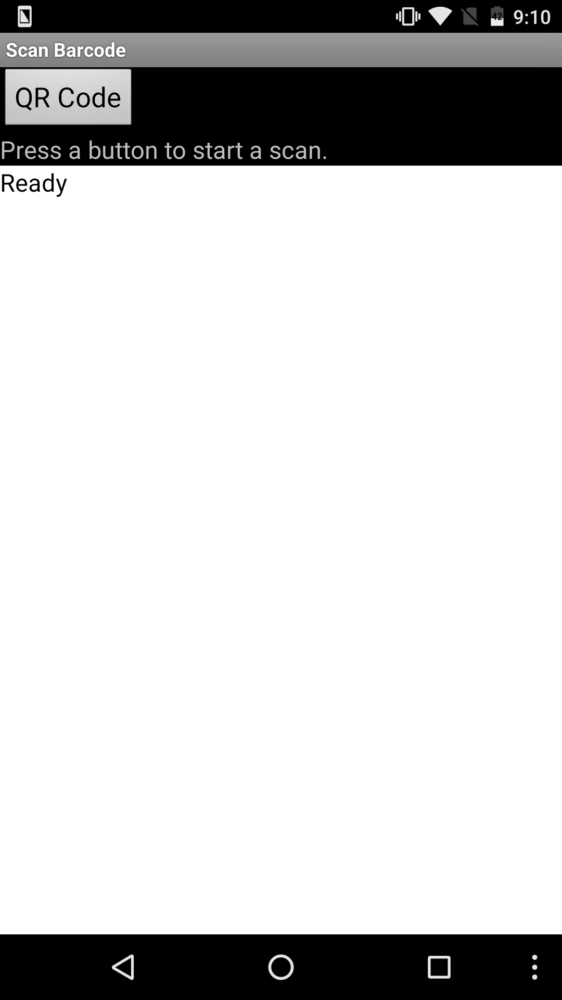
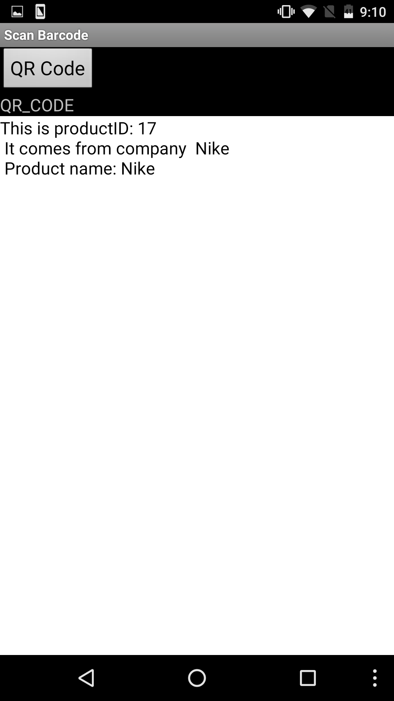
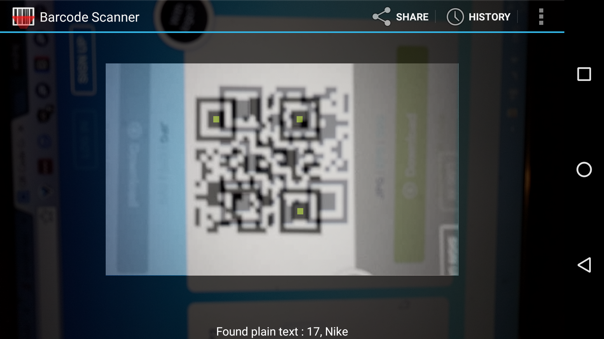

Abstract
For the first time ever, bitcoin created a system that allowed different parties to securely transact digital assets without the need for a trusted third-party. It was able to achieve such a feat by utilizing a new technology called blockchain. Blockchains provide a shared, decentralized, trustless, cryptographically secure, immutable database. This technology’s application goes far beyond bitcoins. It can be implemented in any system where multiple independent parties are transacting digital assets (or their digital analogs), and the need for authenticity of those assets is present. We propose an application of this technology to supply chains, where the authenticity of products is of the highest importance.Background info
In 2009, Satoshi Nakamoto released a paper titled Bitcoin: A Peer-to-Peer Electronic Cash System, in which he described a mechanism whereby participants in a decentralized network could transact digital assets without a trusted third party. It was a solution to a problem that computer scientists have been trying to solve for decades. Bitcoin’s real innovation, which was the ability of independent nodes in a network to agree on the state of a shared ledger, could be applied to more than just currency. Theoretically, this breakthrough could be applied to any situation in which various parties (often with differing incentives and interests) must be able to reach consensus on the reliability of data.Proposal
Hyperfeit proposes a system that utilizes a blockchain in order to provide verification, authentication and traceability along all steps of the supply chain. Specifically, it stores information about the origin and authenticity of every physical product in a decentralized database, which can be accessed by all actors within the system.Relevance
The rise of globalization and the Internet, for all it’s benefits, have also resulted in the rise of the counterfeit market. Counterfeiting is a huge problem within many industries today. In the current economic model, data and certifications of authenticity for a product are often hard to verify, and often eventually just amount to a printed label or seal on the packaging of a product. Usually, neutral, non-profit organizations are commissioned to audit and certify authenticity. However, often one company cannot be trusted to be the sole gatekeeper for all the data about every product's supply chain. According to the IACC (International Anticounterfeiting Coalition), the total value of IPR (intellectual property rights) related seizures in 2014 was 1.22 Billion dollars, and the projected value of global trade in counterfeited goods in 2015 was 1.77 trillion dollars. So counterfeiting is obviously a huge problem within the global economy. But beyond just its economic implications, counterfeit goods can also be a serious hazard to consumers. Nowhere is it more apparent than the pharmaceutical industry. According to the CDC (Center for Disease Control and Prevention), it is estimated that 10% - 30% of pharmaceuticals sold in developing countries are counterfeit. By utilizing a blockchain, everyone, even consumers, could access information about a product and immediately verify where a product came from and whether or not it is authentic.Similar Products
Although the blockchain is currently primarily utilized for crypto-currencies such as bitcoin, there has been increasing interest in using the technology in other applications. For example, Verisart is a startup that uses the blockchain to verify the authenticity of works of art in the art market. Blockverify is a startup that uses the blockchain to verify the authenticity of various high-value products, such as pharmaceuticals, luxury goods, diamonds, and electronics. Our product is unique in that we have implemented the blockchain in app form, making it convenient for producers, and potentially consumers, to verify authenticity.How Blockchains Work
A blockchain is a distributed database that maintains a continuously updating ledger of transactions that is resistant to tampering and revision. This database is made up of blocks that hold information about individual transactions. They also have a timestamp and information that links it to a previous block. The fact that the blockchain is a distributed database means that it is decentralized; every node in the system has a copy of the block chain. This means that there is no centralized database that has to be managed by a third party. Instead, independent nodes all converge to a consensus of the latest version of the database, and any node has the ability to confirm whether or not a transaction exists. Again, right now the blockchain is used primarily with bitcoin to provide currency transaction verification without the need of a middleman for confirmation. But there is a myriad of potential benefits that can come out of utilizing the blockchain in creating transparency in business. Not only would it decrease counterfeiting, but it can also push businesses towards more ethical and sustainable practices. There is a growing demand among consumers to know about where the products they are buying came from and how they were produced, and using a blockchain would give consumers a way to verify information about their products.Goal
Create an app that would be used by producers in a supply chain to verify the authenticity of the products that they receive.Process
We created an app, based on a simple QR code reader, and utilize a linked list to simulate what it would be like for various companies along the same supply chain to use a blockchain (basically a shared, decentralized database) to authenticate their products.How the App Works:
There are two mechanisms in the app that combine to simulate a blockchain authentication system. The first part is information retrieval and the second is information processing. For a product to go through our verification system, it must have a QR code that is specifically formatted according to our system’s specification. When this product goes through our system, our app is used to read the QR code and retrieve the data necessary to determine whether the product is authentic or counterfeit. This data comprises of product ID, as well as an audit trail of previous checkpoints in the supply chain. Once product data has been read by the app, that data is compared to a dataset inside the app about every company and every product in this product’s supply chain. If the imputed product ID is found in the dataset, its QR code audit trail is compared to the audit trail found in the dataset. If the two audit trails match, the product is deemed authentic. Otherwise, all products with the imputed product ID will be deemed counterfeit in the current and all future instances.How it Simulates a Blockchain:
 www.provenance.org/whitepaperAs previously mentioned, a blockchain is essentially a shared/decentralized database. This creates a “data layer” on which all human facing interfaces are built upon. All participants of a supply chain are on this data layer, which allows them to keep a shared/immutable record of all products in the supply chain. Our app, which has a dataset that is used by all participating supply chain partners, is analogous to this data layer that is provided by the blockchain.
Screenshots


